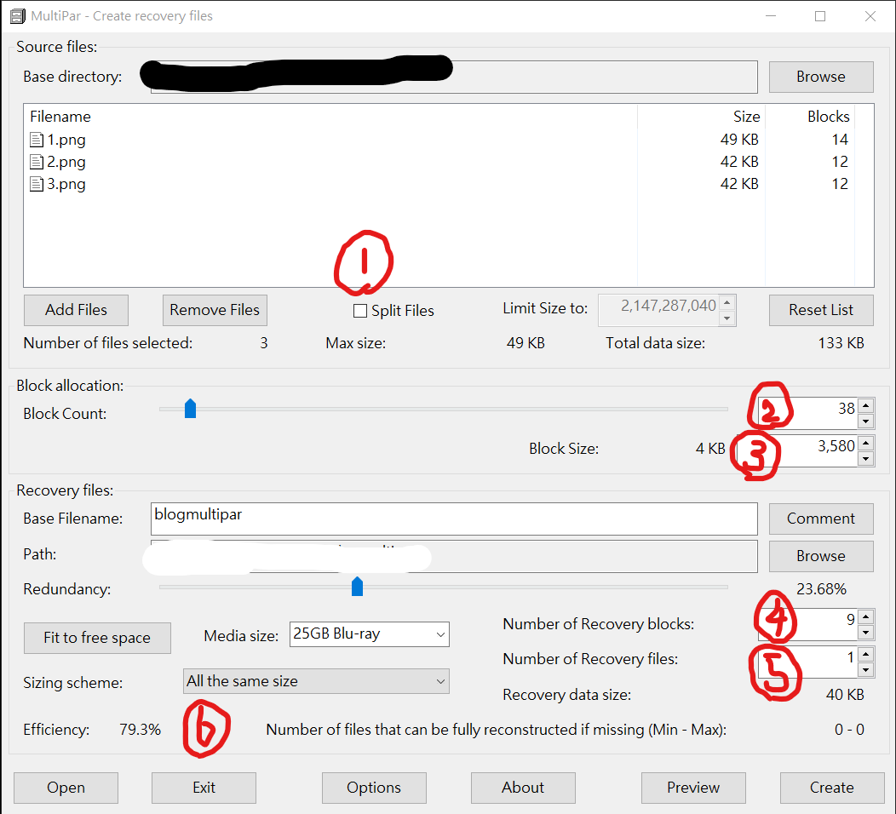

NAS is not backup. Par2 is.¶
Par2 is a opensource file archive and repair software. I know nothing about its history but it is awesome!
I used to buy a bunch of external HDD and copy every file onto it. Having multiple copies across different physical HDD is essentially RAID1 mirroring, but it is painful when I need to move new files in and to edit old files.
Then here comes my savier, PAR2. You archive your files with it, then it is able to detect any changes happened on your files and able to repair it, if the data loss is still manageable.
For example, JPG is susceptible to data corruption. There are high energy particles hitting the ground every second, it is called radiation from the sky. When those particles hits the memory storage, that changes some bits. The probability is not high, still it is high enough to corrupt 10 to 20 photos in my phone and harddisk per year. PAR2 can fix this by repairing. Even if the file is completely gone.
You can download Par2 software in Github. It is call MultiPar, made by the original author.
Download¶
You should scroll down and find Assets,
download for example MultiPar1326_setup.exe and install it.
Installing¶
While you are installing,
there should by a option to create a button in the right-click menu.
You should enable it. It gives better experience.
Using¶
Now that you finished installing. Let say you got a bunch of files pending to archive.
- put them to the same folder
- inside the folder
- select all
- right click
- MultiPar > Create Recovery Files
- the GUI should show up

Let me explain the interface. And where should you look at.
1. This is the datas that you selected to archive.¶
Right below the (1) that I draw, it said Splie Files. Don't ever tick it. Say if you have one 4GB video, ticking it will chop your video into pieces like 1GB-1GB-1GB-1GB and these are the ones who are going to be archived.
2. Block Count.¶
It means that datas that you selected to archive is splited as many blocks. The software will calculate hash and parity for each block.
3. Block Size.¶
Depend on how many blocks you decide to split. For example 1GB data into 4 blocks, which is 250MB for each block.
4. Number of Recovery blocks.¶
How many extra data you are going to keep, to revovery the data loss. Let say you decided to split up 200 blocks in (2), here you select 40 of them as revovery blocks to make a extra copy of it. This give you 40/200 = 20% redundancy. You can make it 200% redundancy if you want, so that you can rebuild everything bit of data even when the original ones are all gone. You may consider to make it a multiple of (2) block count.
5. Number of Recovery files.¶
Data blocks in (4) are gathered together as a single file. Here you can choose how many files will be saved on your disk. you can press Preview button in the bottom right conner to see how it will look like.
6. Efficiency.¶
How efficient is this archive. For example if you have 8MB block size in (3) and your data that being archived are all small 5MB JPG photos, there is still 8-5 = 3MB of space for each block. The efficiency will be low. For that, you can slide the bar in (2) and see how the number in Recovery data size below (5) changes. So that you make it more efficient. But as the author said, < 3% different in efficiency is almost no difference. If you are archiving a bunch of small files, you better zip them before doing this PAR2 thing.
7. One thing you should be alert to¶
is the long sentence in the bottom right conner
Number of files can be fully reconstructed if missing (Min - Max).
Try to make the numbers look legit. For exsample Max0 means you are not able to rebuild any file at all with the current settings. If you accidentally deleted something, it is deleted forever. Max1 is also a bad idea. For example you only have a big zip file to archive. And the redundancy is lower than 100%. If you accidentally deleted that zip file, it is also deleted forever. You should split the zip file into many chunks.
When you think it is OK, you can press Preview button in the bottom right conner to see what is going to happen.
And if that is OK too, you may click Create to actually run the hash program, and wait until it finished.
After it finished, there should be some .par2 files being made in the folder. You can double click on any of them, you should be able to call out MultiPar window. There you can check if anything is corrupted, if yes, you can press repair to repair it.
My personal tip is not to archive too many files at once. Because the hash is being calcutated for all files as a whole. If you archive say 40GB or 60GB of files at once, every time you need to check for 60GB + 15GB (25% redundency) to look for any inconsistency, even though all you want to do is to repair 1MB of data among them. 20GB is a sweet spot for me. But it is still kind of slow. You figure it out yourself.
Created: 2023-01-16